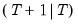

statefinal Sspace Views Display final state values. Show the one-step ahead state predictions or the state prediction covariance matrix at the final values , where is the last observation in the estimation sample. By default, EViews shows the state predictions. Syntax sspace_name.statefinal(options) Options c Display the state prediction covariance matrix. p Print the view. Examples ss1.statefinal(c) displays a view containing the final state covariances (the one-step ahead covariances for the first out-of-(estimation) sample period. Cross-references See “State Space Models and the Kalman Filter” for a discussion of state space models. See also Sspace::stateinit.


 is the last observation in the estimation sample. By default, EViews shows the state predictions.
is the last observation in the estimation sample. By default, EViews shows the state predictions.